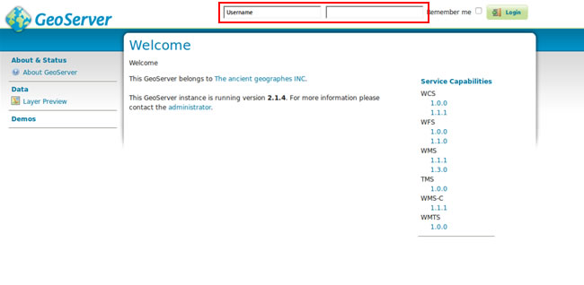

Contents
Para realizar a instalação vamos usar o comando abaixo:
sudo apt-get install postgresql-9.1 postgresql-server-dev-9.1 postgresql-contrib-9.1 libgeos-dev proj postgresql-9.1-postgis
pgadmin3
Mudaremos de usuário e senha para criarmos o banco do PostGIS:
sudo su
su postgres
psql -c "ALTER user postgres WITH PASSWORD '1234'"
createdb postgis
psql -dpostgis -f /usr/share/postgresql/9.1/contrib/postgis-1.5/postgis.sql
psql -dpostgis -f /usr/share/postgresql/9.1/contrib/postgis-1.5/spatial_ref_sys.sql
Checando se o PostGIS foi instalado corretamente:
psql -dpostgis -c "select postgis_lib_version();"
Se tudo foi instalado corretamente deve ser exibido a informação abaixo:
postgis_lib_version
---------------------
1.5.3
(1 registro)
Adicionando o repositório para realizar a instalação:
sudo add-apt-repository ppa:webupd8team/java
sudo apt-get update
sudo apt-get install oracle-java7-installer
Setando o JAVA_HOME como variável de ambiente:
sudo vim /etc/bash.bashrc
No final do arquivo, acrescentaremos as linhas abaixo:
export JAVA_HOME= /usr/lib/jvm/java-7-oracle
export PATH=$PATH:$JAVA_HOME/bin
Para que as alterações tenham efeito, reiniciaremos a máquina e depois executaremos o código abaixo no terminal para testar o funcionamento:
echo $JAVA_HOME
Instalando o Tomcat7:
sudo apt-get install tomcat7
Faremos uma alteração para que o Tomcat7 passe a funcionar corretamente:
sudo vim /etc/init.d/tomcat7
Pesquisaremos pelo trecho abaixo:
JDK_DIRS="/usr/lib/jvm/default-java ${OPENJDKS} /usr/lib/jvm/java-6-openjdk /usr/lib/jvm/java-6-sun"
Após a alteração, o código deve ficar como abaixo:
JDK_DIRS="/usr/lib/jvm/default-java ${OPENJDKS} /usr/lib/jvm/java-6-openjdk /usr/lib/jvm/java-7-oracle"
Faremos o download do GeoServer na url http://downloads.sourceforge.net/geoserver/geoserver-2.1.4-war.zip
Vamos descompactar e copiar o arquivo .war para o diretório abaixo:
sudo cp geoserver.war /var/lib/tomcat7/webapps
Se todos os procedimentos deram certo, poderemos acessar o GeoServer com o login: admin e senha: geoserver através da url http://localhost:8080/geoserver
Tela de login